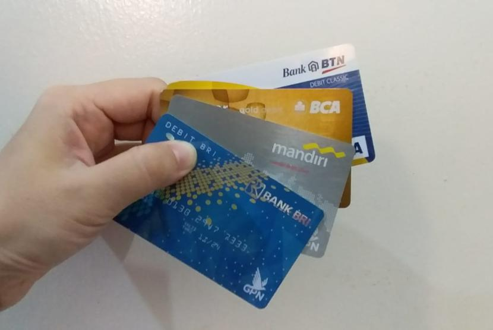

Cara Mengurus Kartu ATM Hilang: Panduan Urus Beres!

Kartu ATM yang hilang bisa membuat panik, apalagi jika masih aktif dan terhubung dengan saldo rekening.
Tenang, ikuti langkah-langkah berikut untuk mengurus penggantian kartu ATM Anda secara aman dan cepat.
Surat kehilangan dari kepolisian (tergantung kebijakan bank).
Penting: Setiap bank punya kebijakan yang sedikit berbeda, sebaiknya hubungi call
center terlebih dahulu untuk memastikan.
Langkah-Langkah Mengurus Kartu ATM Hilang
Blokir Kartu ATM Segera:
Hubungi call center bank Anda untuk memblokir kartu yang hilang agar tidak disalahgunakan.
Lapor Kehilangan (Jika Diminta):
Beberapa bank mungkin meminta surat keterangan kehilangan dari kepolisian, terutama jika terjadi
penyalahgunaan saldo.
Kunjungi Kantor Cabang Bank:
Datangi cabang bank terdekat dengan membawa dokumen yang dibutuhkan. Ambil nomor antrean bagian
customer service.
Verifikasi dan Proses Penggantian:
Petugas akan memverifikasi data Anda, kemudian mencetak kartu ATM baru. Anda bisa langsung
mengatur PIN di mesin EDC.
Aktivasi Kartu ATM:
Beberapa bank memerlukan aktivasi kartu melalui mesin ATM atau aplikasi mobile banking sebelum
digunakan.
Estimasi Waktu & Biaya
Waktu Proses: Sekitar 15–30 menit jika tidak antre.
Biaya: Bervariasi. Umumnya antara Rp10.000 – Rp25.000 tergantung kebijakan
masing-masing bank.
Hal Penting Perlu Tahu
Simpan nomor call center bank Anda agar bisa segera memblokir kartu jika hilang kapan saja.
Jangan berikan PIN ATM kepada siapa pun, bahkan petugas bank sekalipun.
Gunakan fitur mobile banking sebagai alternatif transaksi non-tunai saat kartu hilang.
Video Tutorial
FAQ Khusus ATM
Q: Apakah bisa orang lain mengurus ATM saya yang hilang?
A: Bisa, namun harus membawa surat kuasa, fotokopi KTP pemberi dan penerima kuasa, serta dokumen lain
sesuai syarat bank.
Q: Apakah saldo saya aman setelah ATM hilang?
A: Jika segera diblokir, saldo akan tetap aman. Hubungi bank secepat mungkin untuk menghindari
penyalahgunaan.
Kontak Bank Terkait
Call Center Bank Umum:
Bank BRI: 14017 / 1500017
Bank BCA: 1500888
Bank Mandiri: 14000
Bank BNI: 1500046
Bank Syariah Indonesia (BSI): 14040
Atau kunjungi situs resmi masing-masing bank untuk informasi terbaru.